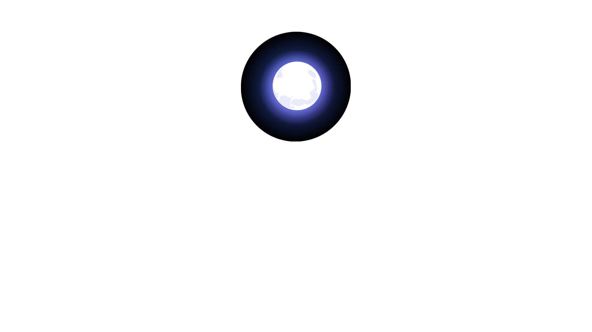
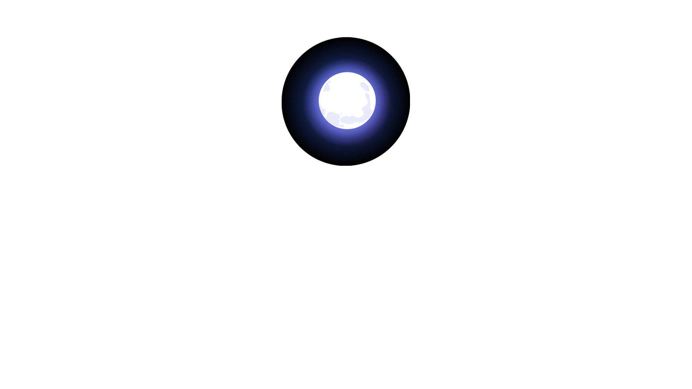
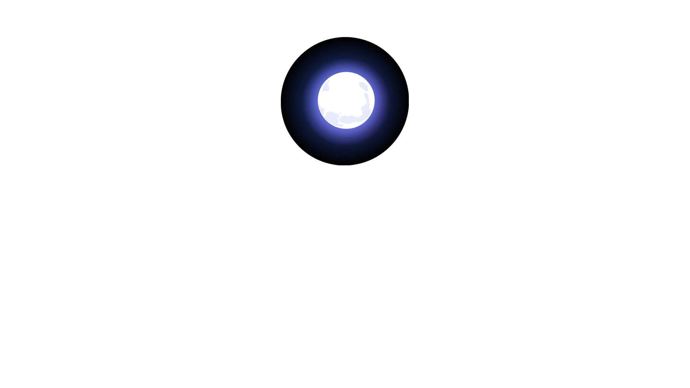
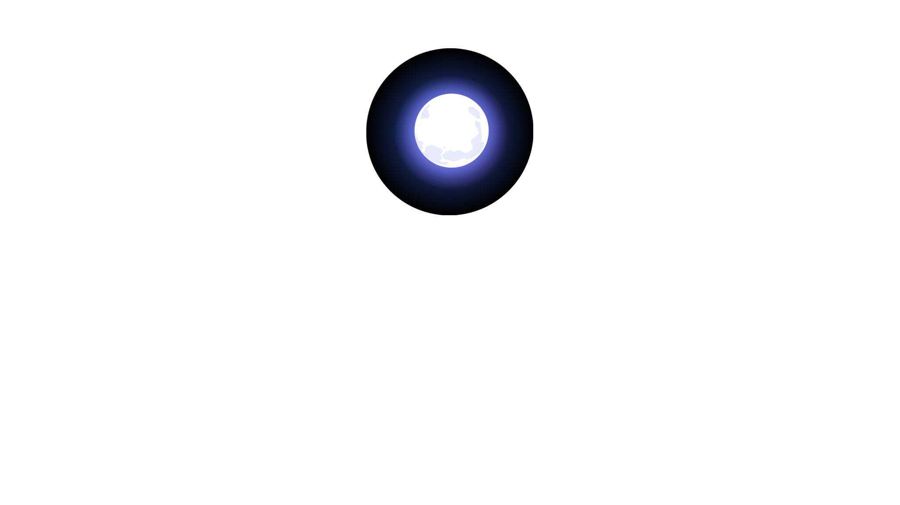

Moonlight
Explore 

Parallax scrolling is a web design technique that creates the illusion of depth by allowing different layers of a website to scroll at different speeds. This can be used to create a more immersive and engaging user experience, as it allows users to interact with the website in a more dynamic way.
Parallax scrolling is often used in websites that are designed to tell a story or to showcase a product or service. For example, a website about a travel destination might use parallax scrolling to create the illusion of moving through the landscape. Or, a website for a new product might use parallax scrolling to highlight the product's features and benefits.
Parallax scrolling can be a very effective way to add visual interest and interactivity to a website. However, it is important to use it sparingly, as too much parallax scrolling can be overwhelming and distracting.
Here are some of the benefits of using parallax scrolling on websites:
Increased engagement: Parallax scrolling can help to keep users engaged on a website by making it more visually interesting and interactive.
Improved storytelling: Parallax scrolling can be used to tell a story or to convey a message in a more engaging way.
Enhanced branding: Parallax scrolling can help to create a more memorable and visually appealing website that reinforces a brand's identity.
However, there are also some potential drawbacks to using parallax scrolling on websites:
Can be distracting: If used too heavily, parallax scrolling can be distracting and make it difficult for users to focus on the content of a website.
Not mobile-friendly: Parallax scrolling can be difficult to implement on mobile devices, and it may not work as well on smaller screens.
Can be resource-intensive:Parallax scrolling can require more resources than a traditional website, which can slow down the loading time of a website.
Overall, parallax scrolling can be a very effective way to add visual interest and interactivity to a website. However, it is important to use it sparingly and to make sure that it is implemented correctly.